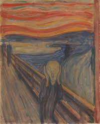

The Starry Night
Vincent van Gogh painted The Starry Night in 1889 while he was staying in Saint-Paul asylum in Saint-Rémy, France

About the Artist Read more
A colection of most famous artwork and there artists
Vincent van Gogh painted The Starry Night in 1889 while he was staying in Saint-Paul asylum in Saint-Rémy, France
Johannes Vermeer painted Girl with a Pearl Earring in 1665 while he was staying in Delft, Netherlands

Edvard Munch painted The Scream in 1893 while he was staying in Berlin, Germany
